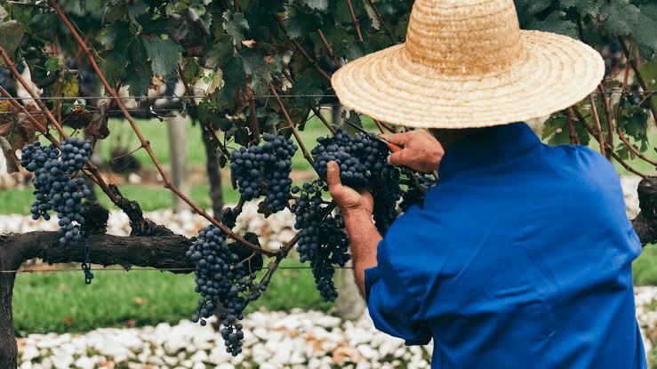

Nossa Tradição
Desenvolvido pela equipe mixtapegbl, este portal reflete a dedicação artesanal desde o cuidado com o solo até o engarrafamento.

Colheita Selecionada
Nossas uvas são colhidas manualmente nas primeiras horas da manhã, garantindo a temperatura ideal para o início da prensa.

Envelhecimento Natural
O repouso absoluto em barris de carvalho europeu confere ao vinho notas complexas de baunilha, especiarias e estrutura inconfundível.